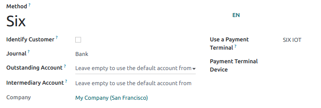

SIX¶
Conectar una terminal de pago SIX le permite ofrecerle a sus clientes un flujo de pago ágil y facilitar el trabajo de sus cajeros.
Advertencia
Aunque Worldline compró SIX Payment Services y ambas empresas usan terminales de pago Yomani, el firmware con el que trabajan es diferente. Es por esto que las terminales recibidas desde Worldline no son compatibles con esta integración.
Configuración¶
Instalar el módulo de PdV IoT Six¶
Para activar el módulo PdV IoT Six vaya a Aplicaciones, quite el filtro Aplicaciones y busque PdV IoT Six. Este módulo agrega el driver y la interfaz que se necesita para que su base de datos detecte terminales Six.
Nota
Este módulo reemplaza el módulo PdV Six.
Conectar una caja IoT¶
Para conectar una terminal de pago Six a Odoo se necesita usar una Raspberry Pi o una caja IoT virtual (solo para sistema operativo Windows).
Configurar el ID de la terminal¶
Vaya a la página de inicio de su caja IoT donde podrá encontrar el campo Terminal de pago Six una vez que el servidor de su base de datos esté conectado a la caja IoT. Haga clic en Configurar, en el campo ID de la terminal ingrese el ID que recibió de Six y haga clic en Conectar. El ID de su terminal de Six debería aparecer en la sección Current Terminal Id (ID de la terminal actual).

Una vez que haya configurado el ID de la terminal Six, Odoo reiniciará la caja IoT de inmediato. Si su terminal de Six está en línea, se detectará y conectará a la base de datos de manera automática. Revise la página de inicio de la caja IoT en la sección Pagos para confirmar la conexión.

Configure el método de pago¶
Habilite la terminal de pago en los ajustes de la aplicación y cree el método de pago relacionado. Establezca el tipo de diario como Banco y seleccione SIX IOT en el campo Usar una terminal de pago. Luego, seleccione el dispositivo correspondiente en el campo Dispositivo de terminal de pago.
Ya que haya creado el método de pago, puede seleccionarlo en sus ajustes del Punto de venta. Para hacerlo, vaya a los ajustes del punto de venta, haga clic en Editar y agregue el método de pago en la sección de Pagos.
Pagar con una terminal de pago¶
Cuando procese un pago, seleccione su método de pago Six en la sección método de pago y haga clic en Enviar. Si desea cancelar la solicitud de pago, haga clic en cancelar. Una vez que el pago se haya realizado correctamente, el estado cambiará a pago exitoso.

Nota
Una vez que se procese el pago, el tipo de tarjeta que se utilizó y el ID de la transacción aparece en el registro del pago.
El idioma utilizado para los mensajes de error es el mismo que el de la terminal. Configure la terminal para cambiar el idioma o contacte con Six.
El puerto utilizado por el terminal Six es
7784de forma predeterminada.
Truco
Si tiene problemas de conexión entre la terminal de pago y Odoo, puede forzar la validación del pago en Odoo mediante el botón forzar terminación.